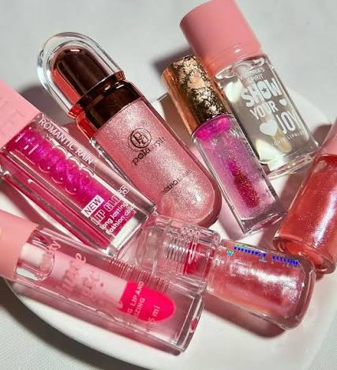
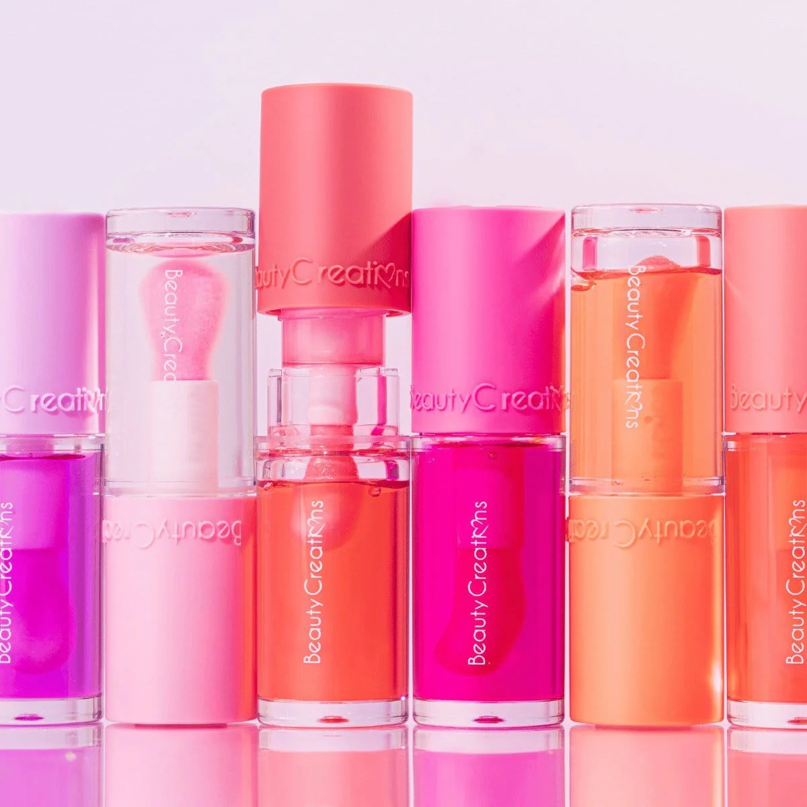

GLOSS con brillos
productos cosméticos diseñados para dar a los labios un acabado luminoso, jugoso y reflectanteCaracterísticas principales:
- Acabado luminoso: Proporciona un efecto húmedo o "espejo", reflejando la luz para que los labios se vean más carnosos y tridimensionales.
- Textura: Suele ser ligera, gelificada y fácil de deslizar. Las formulaciones modernas priorizan acabados no pegajosos.
- Versatilidad de color: Se presenta en tonos translúcidos (transparentes), con colores sutiles, o cargados de partículas shimmer y destellos para un brillo de alta intensidad.
- Hidratación y cuidado: Muchas fórmulas están enriquecidas con agentes emolientes, aceites, manteca de karité o ácido hialurónico para nutrir la piel de los labios mientras se usan.

GLOS CON PICMENTACION
producto de maquillaje que combina el acabado luminoso y voluminizador de un brillo tradicional con la cobertura de color de un labial.
Características principales:
- Color intenso y opacidad: A diferencia del gloss transparente tradicional, aporta una alta pigmentación que cubre el tono natural de los labios en una o dos pasadas
- Color intenso y opacidad: A diferencia del gloss transparente tradicional, aporta una alta pigmentación que cubre el tono natural de los labios en una o dos pasadas
- Textura: Suelen ser cremosos, ligeros y menos pegajosos que los brillos convencionales para fijar mejor el color sin perder la comodidad.
- Efecto óptico: Al reflejar la luz, los pigmentos dentro de la base brillante hacen que los labios luzcan más carnosos, carnosos y definidos.
.jpg)
GLOS LIQUIDO
producto de maquillaje labial diseñado para aportar un acabado luminoso, jugoso y con volumen.
Características principales:
- Hidratación y cuidado: Los glosses modernos suelen estar enriquecidos con emolientes como ácido hialurónico, vitamina E y aceites naturales (como jojoba, coco o aguacate), previniendo la resequedad y manteniendo los labios
- Sensación: Aporta una apariencia voluminosa haciendo que los labios luzcan más gruesos y carnosos al reflejar la luz.
- Ideal para: Quienes quieren diversión al volante en un SUV.
- Motores potentes (incluyendo híbridos) con excelente dinámica de manejo.

GLOS TIPO COREANA
se caracterizan por su efecto de "labios de cristal" (glass lips) y acabado jugoso
Características principales:
- Efecto jugoso y cristalino: Aportan un brillo de "agua" o "espejo" (también llamado glass lips) que refleja la luz, haciendo que los labios luzcan más carnosos al instante..
- Fórmula no pegajosa: A diferencia de los brillos tradicionales, su textura es parecida a la de un gel acuoso o bálsamo muy ligero..
- Alta hidratación: Están formulados con ingredientes de cuidado labial (skincare) como aceites naturales (jojoba, almendra) y ácido hialurónico, evitando que los labios se resequen o se agrieten..
- Color modulable o translúcido: Suelen ofrecer un color suave y sutil, perfecto para crear el famoso efecto coreano (gradient lips) donde el color es más intenso en el centro y se difumina hacia los bordes..
.jpg)
Toyota Hilux 2026
brillo de acabado cristalino no pegajoso.
Características principales:
- Acabado sutil: Proporciona un brillo discreto, fino y elegante, sin destellos gruesos de diamantina o glitter.
- Efecto natural: Realza el color natural de los labios, dándoles volumen visual sin alterarlos ni recargarlos..
- Hidratación profunda: Su formulación suele ser rica en ingredientes emolientes (como ácido hialurónico o aceites naturales) que evitan la sequedad y los mantienen suaves..
- Textura ligera y no pegajosa: A diferencia de los glosses tradicionales, las fórmulas actuales de poco brillo priorizan una sensación de bálsamo cómodo y suave, sin ser espesos ni pesados..
- Gran versatilidad: Se puede usar solo para un look "clean/minimalista" o como topper sobre un labial mate o delineador, para darle un toque satinado e hidratante sin modificar el tono original..
.jpg)